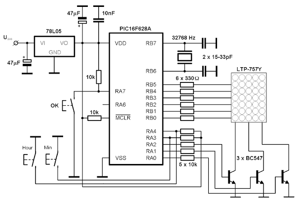

Geek clock na PIC16F628A
Zegarek z wyświetlaniem czasu w systemie binarnym powstał bez jakiejś wyraźnej potrzeby. Chciałem zbudować coś dziwacznego i zupełnie nieprzydatnego a przy okazji nauczyć się czegoś nowego o mikrokontrolerach z rodziny PIC16.
Pierwszy projekt powstał na mikrokontrolerze PIC16F877, ponieważ dysponuje on dużą ilością portów i nie trzeba się specjalnie wysilać z obsługą wyświetlacza. Stwierdziłem jednak, że w ten sposób przetrenuję tylko wykorzystanie układu TIMER1 z jego układem oscylatora dla kwarcu zegarkowego. No i układ jest trochę duży jak na tak proste zadanie.
Postanowiłem utrudnić sobie życie i zastosować mikrokontroler PIC16F628 (z mocno ograniczoną w stosunku do porzednika liczbą pinów) oraz, w roli wyświetlacza, matrycę LED 5x7 punktów. Od razu stało się jasne, że trzeba będzie zastosować sterowanie diodami z multipleksowaniem. W tym momencie pomyślałem o matrycy ze wspólną anodą w kolumnach i tranzystorami p-n-p do zasilania kolumn diod. Niestety, w jednym sklepie nie było wyświetlaczy 5x7 a w innym był tylko jeden typ: LTP-757Y. Nie pozostało mi nic innego, jak dostosować się do tego, co było dostępne.
Kupując wyświetlacz dowiedziałem się od sprzedawcy tylko tyle, że ma on żółty kolor świecenia. Dopiero w domu ściągnąłem sobie z sieci datasheet tej kostki i zorientowałem się, że w kolumnach ma on katody a w wierszach anody. Wymusza to zastosowanie tranzystorów n-p-n do zwierania katod do masy. Zasilanie (plus) podajemy na wiersze (anody diod LED) z linii portu mikrokontrolera przez rezystory szeregowe ograniczające prąd. W wyświetlaczu nie wykorzystuje się najwyższego wiersza, ponieważ do wyświetlenia liczb z zakresu 0-59 wystarcza 6 diod LED. Liczby binarne reprezentujące godziny, minuty i sekundy są wyświetlane w pionie. Uznałem, że tak będzie czytelniej.
Program korzysta z dwóch przerwań od wewnętrznych liczników/timer'ow. Odliczaniem czasu zajmuje się TIMER1, którego 16-bitowy licznik zlicza impulsy z oscylatora pracującego z zewnętrznym kwarcem zegarkowym 32768 Hz. Przy każdym przepełnieniu licznika procedura obsługi przerwania ustawia najstarszy bit rejestru
TMR1H, co jest równoznaczne z zainicjowaniem licznika wartością początkową równą 32768. Dzięki temu przerwanie występuje dokładnie co sekundę. W programie obsługi przerwania zrealizowana jest właściwie cała procedura liczenia czasu - sekund, minut i godzin.
Przerwanie od TIMER0 zajmuje się wyświetlaniem czasu na wyświetlaczu LED 5x7. Wyświetlacz jest przemiatany ponad 80 razy na sekundę co daje wrażenie, że świeci się stale. Jednocześnie wpatrywanie się w świecące diody LED nie męczy wzroku.
Po włączeniu zasilania wszystkie diody są zgaszone (godzina 0:00:00) i należy zegarek ustawić. Wciskanie przycisku HOUR powoduje zwiększanie liczby godzin a wciskanie przycisku MIN skutkuje zwiększaniem liczby minut. Po skończeniu ustawiania godzin i minut należy wcisnąć przycisk OK, co spowoduje wystartowanie zliczania upływu czasu. Sekundy zawsze startują od zera i nie ustawia się ich.
A oto treść programu w języku assemblera PIC16F628:
;---------------------------------------------------------------
; Mikrokontroler jednoukladowy PIC16F628A pracuje z wewnetrznym
; oscylatorem RC i kwarcem zegarkowym na RB6 - RB7
;
; Autor programu: Jacek Porembiński
; Data ostatniej modyfikacji: 12 stycznia 2008 r.
;----------------------------------------------------------------
;--------------------------------- Main declarations
LIST P=PIC16F628A
include <p16f628a.inc>
;
ERRORLEVEL -302
;--------------------------------- Hardware declaration
__CONFIG h'3F78'
CBLOCK 0x020
S_TEMP ; Kopia rejestru STATUS-u
Sekundy ; licznik sekund
Minuty ; licznik minut
Godziny ; licznik godzin
Temp ; zmienna pomocnica
Col ; kolumna wyswietlacza
ENDC
W_TEMP EQU 0x070 ; Kopia akumulatora
Min EQU 3 ; ustawianie minut RA3
Hour EQU 4 ; ustawianie godzin RA4
OK EQU 7 ; OK pin RA7
SET_BANK_0:MACRO
bcf STATUS, RP0
bcf STATUS, RP1
ENDM
SET_BANK_1:MACRO
bsf STATUS, RP0
bcf STATUS, RP1
ENDM
;----- Main program -----
org 0x000
goto Main_Start
;=========================================================================
; Podprogramy moga byc umieszczone w adresach ponizej 0x0FF
;=========================================================================
org 0x004 ; od tego adresu musi sie zaczynac procedura
; obslugi przerwania zegarowego
;
;********************************
;* Obsluga przerwan od timer'ow *
;********************************
;
movwf W_TEMP
swapf STATUS,W
bcf STATUS,RP0
bcf STATUS,RP1
movwf S_TEMP
btfsc PIR1,TMR1IF
goto Timer1
;
;******************************
;* Obsluga przerwania TIMER0 *
;*****************************
;
Timer0
incf Col,F ; zwieksz Col
movf Col,W ; Col do akumulatora
xorlw 0x03 ; i sprawdzamy, czy osiagnelo 3
btfsc STATUS,Z ; przeskocz jesli NIE
clrf Col ; TAK: wyzeruj Col
movf Col,F ; zaladuj Col do Col
btfsc STATUS,Z ; przeskocz jesli nie zero
goto Col_1 ; idz do "kolumna pierwsza"
btfsc Col,1 ; przeskocz jesli Col = 1 ?
goto Col_2 ; idz do "kolumna druga"
Col_3
clrw
movwf PORTB ; zgas wszystkie diody
movlw b'11111001'
movwf PORTA ; uaktywnij trzecia kolumne
movf Sekundy,W ; wczytaj sekundy do W
movwf PORTB ; i wyrzuc na PORTB
goto KonT0Int
Col_2
clrw
movwf PORTB ; zgas wszystkie diody
movlw b'11111010'
movwf PORTA ; uaktywnij druga kolumne
movf Minuty,W ; wczytaj minuty do W
movwf PORTB ; i wyrzuc na PORTB
goto KonT0Int
Col_1
clrw
movwf PORTB ; zgas wszystkie diody
movlw b'11111100'
movwf PORTA ; uaktywnij pierwsza kolumne
movf Godziny,W ; wczytaj godziny do W
movwf PORTB ; i wyrzuc na PORTB
KonT0Int
bcf INTCON,T0IF ; skasuj bit sygnalizujacy przerwanie
goto EndOfInt
;
;******************************************
;* Obsluga przerwania TIMER1 co 1 sekunde *
;******************************************
;
Timer1
bsf TMR1H,7 ; ustaw najstarszy bit licznika Timer1
incf Sekundy,F ; zwieksz licznik sekund o 1
movf Sekundy,W ; zaladuj sekundy do akumulatora
xorlw .60 ; porownaj z 60
btfss STATUS,Z ; czy sekundy = 60 ???
goto wyjscie ; NIE: wyjdz z przerwania
clrf Sekundy ; TAK: wyzeruj sekundy
incf Minuty,F ; zwieksz licznik minut
movf Minuty,W ; zaladuj minuty do akumulatora
xorlw .60 ; porownaj z 60
btfss STATUS,Z ; czy minuty = 60 ???
goto wyjscie ; NIE: wyjdz z przerwania
clrf Minuty ; TAK: wyzeruj minuty
incf Godziny,F ; zwieksz licznik godzin
movf Godziny,W ; zaladuj godziny do akumulatora
xorlw .24 ; porownaj z 24
btfsc STATUS,Z ; czy godziny = 24 ???
clrf Godziny ; TAK: wyzeruj godziny
; NIE: wyjdz z przerwania
wyjscie
bcf PIR1,TMR1IF ; skasuj bit sygnalizujacy przerwanie
EndOfInt
swapf S_TEMP,W
movwf STATUS
swapf W_TEMP,F
swapf W_TEMP,W
retfie
Delay
movlw 0xD0 ; petla zewnetrzna 32 razy
clrf Temp ; wyzeruj Temp
lab decfsz Temp,F ; Temp-- i przeskocz gdy Temp==zero
goto lab ; powtarzaj 256 razy
addlw 0x01 ; W++
btfss STATUS,Z ; przeskocz gdy W==0
goto lab
return ; Temp == 0 wiec wroc z podprogramu
;-----------------------
; Glowna czesc programu
;-----------------------
Main_Start
SET_BANK_0 ; Select Bank 0
clrf TMR1L
clrf TMR1H
clrf Sekundy
clrf Minuty
clrf Godziny
movlw 0x07
movwf CMCON
clrf PORTB
movlw 0xFF
movwf PORTA
SET_BANK_1 ; Select Bank 1
movlw b'11111000' ; piny RA0, RA1 i RA2
movwf TRISA ; ustaw jako wyjscia
movlw b'11000000' ; piny RB7 i RB6 jako wejscia
movwf TRISB ; pozostale pracuja jako wyjscia
movlw b'10000011' ; prescaler 1:16
movwf OPTION_REG
SET_BANK_0 ; Select Bank 0
clrf TMR0
bcf INTCON,T0IF ; skasuj flage przerwania
bsf INTCON,T0IE ; wlacz przerwanie od Timer0
bsf INTCON,GIE ; oraz globalnie
;---------------------------------------------------------------
Ustaw
SET_BANK_0
btfss PORTA,OK ; przeskocz gdy nie wcisniety OK
goto SprOK ; sprawdz, czy koniec ustawiania
btfss PORTA,Min ; przeskocz, gdy nie wcisniety Min
goto SprMin ; sprawdz, czy ust. minut
btfss PORTA,Hour ; przeskocz, gdy nie wcisniety Hour
goto SprHour ; sprawdz, czy ust. godzin
goto Ustaw ; czekaj na wcisniecie klawisza
SprOK
call Delay ; odczekaj chwile (drgania stykow)
btfss PORTA,OK ; przeskocz, gdy nie wcisniety OK
goto Zegar ; wystartuj zegar
goto Ustaw ; wroc do ustawiania zegara
SprMin
call Delay ; odczekaj chwile
btfsc PORTA,Min ; przeskocz, gdy wcisniety Min
goto Ustaw ; wroc na poczatek ustawiania
incf Minuty,F ; zwieksz minuty
movf Minuty,W ; sprawdz, czy nie przekroczono 60
xorlw .60 ;
btfsc STATUS,Z ; przeskocz, gdy (Minuty≠60)
clrf Minuty ; wyzeruj minuty
L1 btfss PORTA,Min ; czy puszczono przycisk Min?
goto L1 ; jesli nie, to czekaj
call Delay ; odczekaj chwile (debounce)
btfss PORTA,Min ; czy naprawde puszczony klawisz?
goto L1 ; nie, czekaj dalej na zwolnienie przycisku
goto Ustaw ; przycisk zwolniony, wroc do ustawiania
SprHour
call Delay ; odczekaj chwile
btfsc PORTA,Hour ; przeskocz, gdy wcisniety Hour
goto Ustaw ; wroc na poczatek ustawiania
incf Godziny,F ; zwieksz godziny
movf Godziny,W ; sprawdz, czy nie przekroczono 24
xorlw .24 ;
btfsc STATUS,Z ; przeskocz, gdy (Godziny≠24)
clrf Godziny ; wyzeruj godziny
L2 btfss PORTA,Hour ; czy puszczono przycisk Hour?
goto L2 ; jesli nie, to czekaj
call Delay ; odczekaj chwile (debounce)
btfss PORTA,Hour ; czy naprawde puszczony klawisz?
goto L2 ; nie, czekaj dalej na zwolnienie przycisku
goto Ustaw ; przycisk zwolniony, wroc do ustawiania
;---------------------------------------------------------------
Zegar
movlw b'00001011' ;
movwf T1CON ; oscylator 32768 Hz na RB6 i RB7, preskaler 1:1
bsf INTCON,PEIE ; zezwol na przerwania od 2^15
bsf PIE1,TMR1IE ; odblokuj odliczanie czasu
goto $ ; petla bez konca
end
A oto schemat ideowy urządzenia:
.
